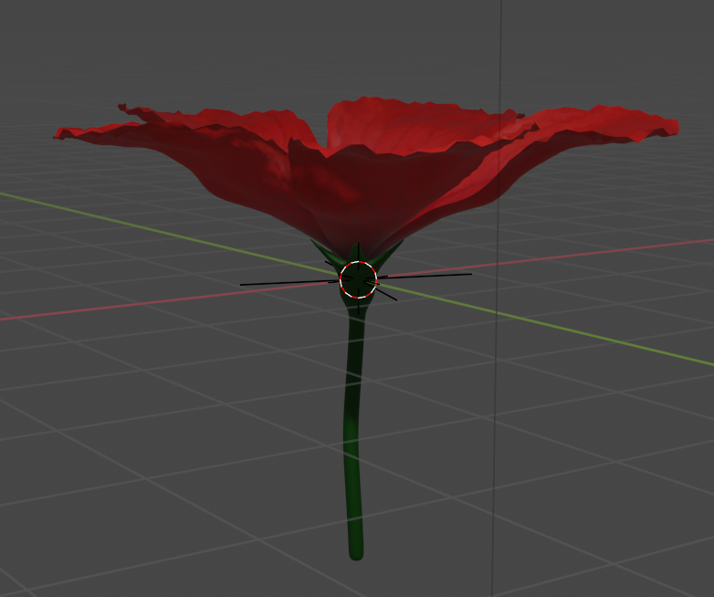
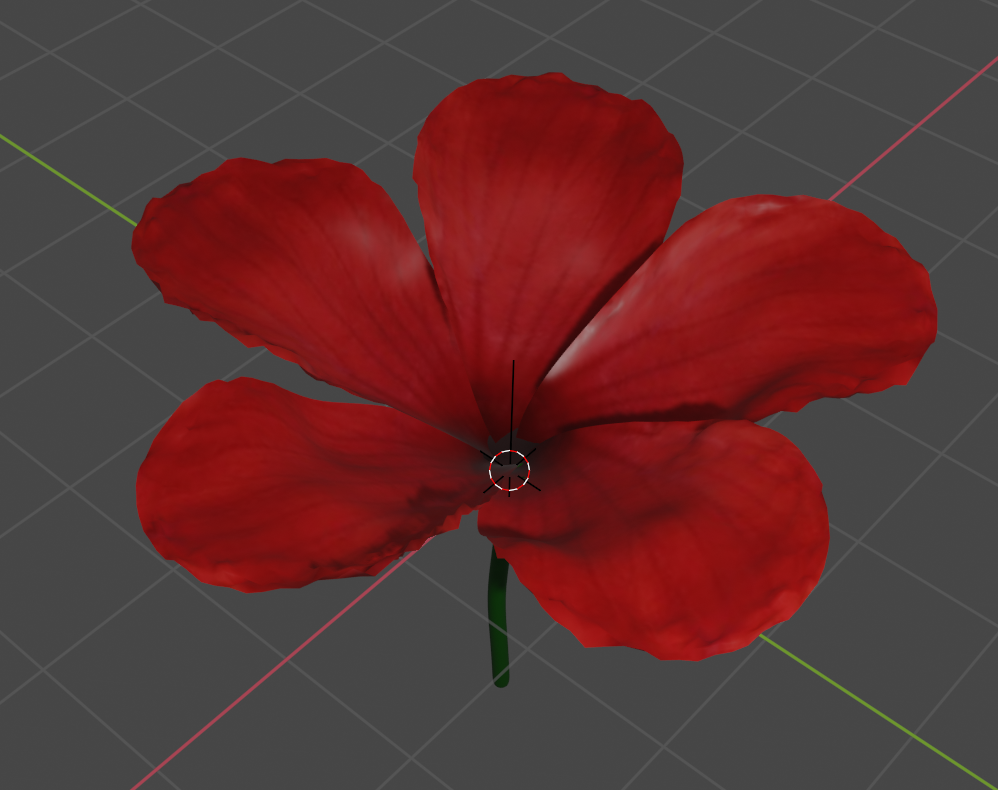
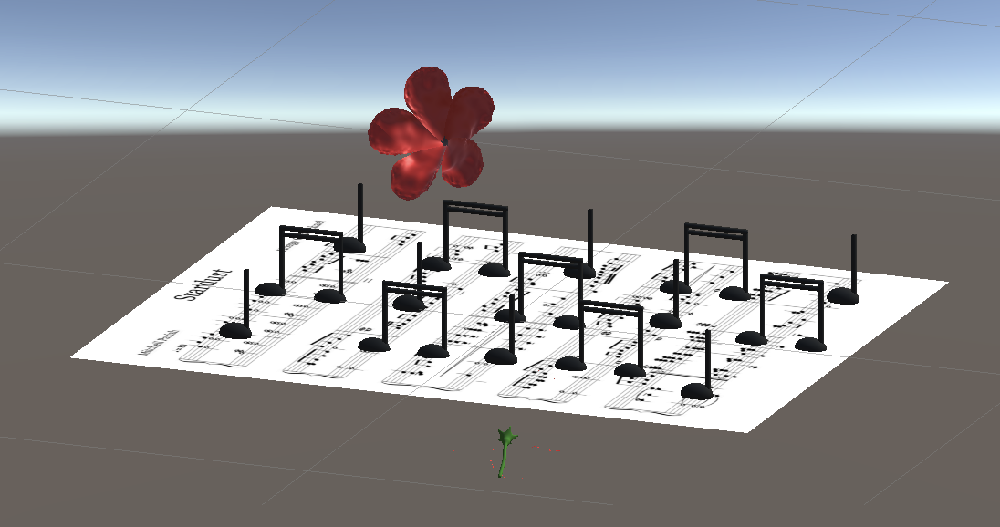
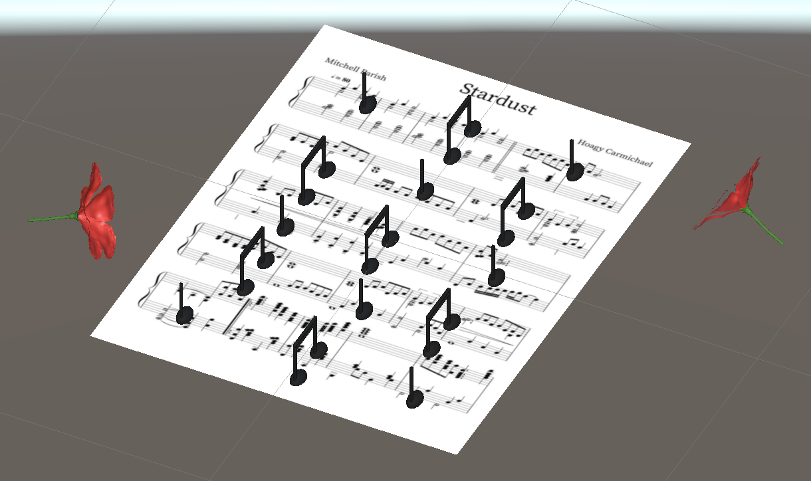

Augmented Reality
Purpose
The intention behind this project is to highlight the Hoagy Carmichael memorial and the interactions that students have with the statue on campus. Many passing students will put flowers from the nearby plants on the rim of the statue's hat or leave other small tokens. I wanted to reflect this tradition in my project.
Process
I began my project by first recreating the flowers that people often leave at the memorial. Surrounding the statue, there are various flower plants including a small red flower that I used as my reference. I created my model in Blender and then exported it to my scene in Unity.
 For my image target, I used the sheet music for "Stardust," one of Carmichael's popular pieces. I chose the sheet music rather than the statue itself since the statue is all black and would not work well as an image target. This way, I imagined that the sheet music would be resting on the statue as the user interacts with it using my project.
I wanted to add an animation of music notes coming off of the sheet music to simulate Carmichael actually playing the music. I created a few different music notes in Blender and then exported them to Unity. Once in Unity, I used the animation tool to the music notes float out from the image target.
 Project Links
Demo Video: Link
Unity File: Link
Flower Blender File: Link
Eighth Note Blender File: Link
Quarter Note Blender File: Link